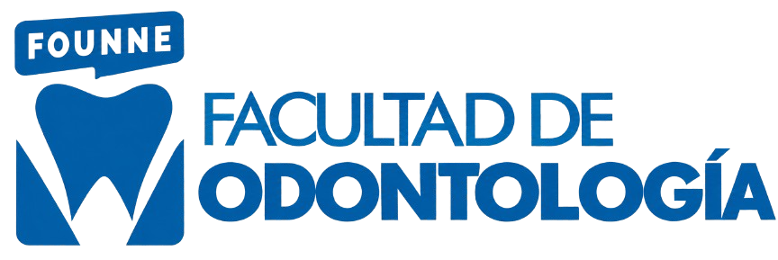

Facultad de Odontología

La Facultad de Odontología de la Universidad Nacional del Nordeste (FOUNNE) es una prestigiosa institución pública de educación superior de la región del Nordeste argentino. Su sede principal se encuentra en el Campus Dr. Deodoro Roca en la ciudad de Corrientes, Provincia de Corrientes.
- Carrera de Grado: Ofrece el título de Odontólogo/a, una carrera presencial con una duración estimada de 5 años que requiere dedicación de tiempo completo.
- Ingreso y Cursos: Para los ingresantes suele dictarse un Curso de Articulación obligatorio enfocado en la nivelación y la vida universitaria. El proceso de preinscripción se realiza de forma virtual a través del sistema de Inscripciones UNNE o vía SIU-Guaraní.
- Hospital Universitario: La facultad cuenta con el renovado Hospital Odontológico "Santa Apolonia", donde los estudiantes avanzados realizan prácticas profesionales supervisadas por docentes, brindando atención odontológica comunitaria (arreglos de caries, tratamientos de conducto y prótesis).
- Investigación y Posgrado: Dispone de una activa agenda de proyectos científicos (como fitodontología y saliva como fluido diagnóstico) y una variada oferta de carreras de posgrado y especializaciones clínicas.
Documentación Obligatoria:
- Documento Nacional de Identidad: Archivo único que contenga el anverso y reverso del DNI vigente. En caso de extranjeros sin DNI, se requiere Pasaporte o Cédula de Identidad del MERCOSUR.
- Fotografía digital: Tipo carnet 4x4 cm, con fondo blanco, de frente.
- Título de Nivel Medio o Secundario: Debe subirse el título original digitalizado. Si todavía no lo tienes, puedes presentar:
- Constancia de título en trámite.
- Constancia de finalización de estudios secundarios indicando explícitamente la leyenda "No adeuda materias".
- Carnet de vacunación: Copia de las vacunas Doble o Triple Bacteriana (anverso y reverso).
El Plan de Estudios de la Carrera de Odontología en la FOUNNE (aprobado bajo la resolución institucional vigente) se estructura en 5 años de duración, con una carga horaria total intensiva que combina la formación científica-teórica, preclínica y las prácticas en el hospital odontológico universitario.
1er Año: Fundamentos Biológicos e Integración
Orientado a las ciencias morfológicas, básicas y las bases metodológicas y comunicacionales esenciales del profesional de la salud.
- Introducción a la Odontología (Espacio de integración, Comunicación Oral y Escrita, Informática Aplicada a la Educación, Antropología, Metodología de la Investigación).
- Anatomía Dentaria.
- Histología y Embriología del macizo craneofacial.
- Físico-Química Biológica.
2do Año: Morfofunción y Biomateriales
Se profundiza en el funcionamiento sistémico del cuerpo humano y en las propiedades de las herramientas de trabajo clínico.
- Morfofunción I y II (Anatomía humana general, Fisiología y Bioquímica aplicadas).
- Biomateriales Dentales.
- Microbiología e Inmunología Oral.
- Ergonomía y Bioseguridad.
3er Año: Patología y Fundamentos Clínicos
El estudiante comienza a transicionar hacia los aspectos patológicos y el entrenamiento en laboratorios de simulación y preclínicas.
- Anatomía Patológica (General y Bucal).
- Clínica de Operatoria Dental (Fundamentos teóricos y simulaciones preclínicas).
- Semiología y Diagnóstico Clínico.
- Farmacología General y Terapéutica.
- Diagnóstico por Imágenes (Radiología).
4to Año: Prácticas Clínicas Específicas
Inicia formalmente la atención directa de pacientes en el Hospital Docente de la facultad, dividiéndose por áreas específicas de la disciplina.
- Cirugía Buco-Maxilofacial (Semestral).
- Terapéutica Farmacológica (Cuatrimestral).
- Endodoncia y Periodoncia.
- Odontología Preventiva y Comunitaria.
- Prótesis y Oclusión (Fija y Removible).
5to Año: Práctica Profesional e Integral
El último año está volcado a la resolución de casos complejos complejos y el egreso enfocado en la comunidad.
- Clínica Integral Adultos (Anual, con una alta carga horaria práctica).
- Clínica en Odontopediatría (Anual).
- Investigación en Odontología (Cuatrimestral).
- Ortodoncia.
- Odontología Legal y Deontología Profesional.
- Práctica Profesional Supervisada (PPS): Pasantías finales obligatorias en servicios de salud comunitarios externos o centros de atención primaria